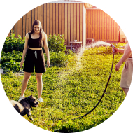
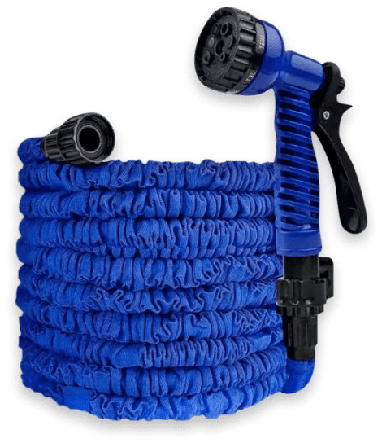
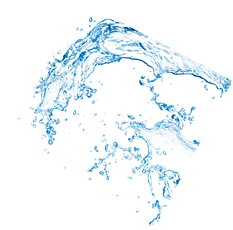

<section class="advantage__section">
    <div class="container">
        <div class="advantage__section-wrapper">
            <div class="advantage__info">
                <div class="advantage__info-left">
                    <div class="advantage__info-block">
                        
                        <div class="advantage__info-circle"></div>
                        <div class="advantage__info-arrow">
                            
                        </div>
                    </div>
                    <p class="advantage__left-text">
                        Зробіть свій сад прекрасним разом з <span>XHOSE MAX!</span>
                    </p>
                </div>
                <div class="advantage__info-right">
                    Переконайтесь у винятковій якості 
                    
                    <span>XHOSE MAX</span>
                    вже сьогодні!
                </div>
            </div>
            <h2 class="advantage__section-title">
                Переваги <span>XHOSE MAX:</span>
            </h2>
            <div class="advantages">
                <div class="advantage__column">
                    <div class="advantage__column-block">
                        <div class="advantage advantage__1">
                            <h3 class="advantage__title">
                                Легкий і компактний:
                            </h3>
                            
                        </div>
                        <div class="advantage advantage__2">
                            <h3 class="advantage__title">
                                Міцний і довговічний:
                            </h3>
                            <p class="advantage__text">
                                Виготовлений з високоякісних матеріалів, <span>XHOSE MAX</span> витримує найжорсткіші умови експлуатації. Він стійкий до проколів, скручування і зношування.
                            </p>
                            
                        </div>
                    </div>
                    <div class="advantage advantage__3">
                        <h3 class="advantage__title">
                            Суперрозтягувальна технологія:
                        </h3>
                        <p class="advantage__text">
                            Шланг збільшується втричі від своєї початкової довжини під час подачі води та автоматично скорочується після вимкнення води. Це дозволяє легко зберігати його і транспортувати без зайвих зусиль.
                        </p>
                        
                    </div>
                </div>
                <div class="advantage advantage__4">
                    <h3 class="advantage__title">
                        Зручність використання:
                    </h3>
                    <p class="advantage__text">
                        Встановлюється за лічені секунди, а ергономічна насадка дозволяє регулювати потік води від сильного струменя до м'якого розпилення.
                        <br><br>
                        Шланг збільшується втричі від своєї початкової довжини під час подачі води та автоматично скорочується після вимкнення води. Це дозволяє легко зберігати його і транспортувати без зайвих зусиль.
                    </p>
                    
                </div>
            </div>
        </div>
    </div>
</section>